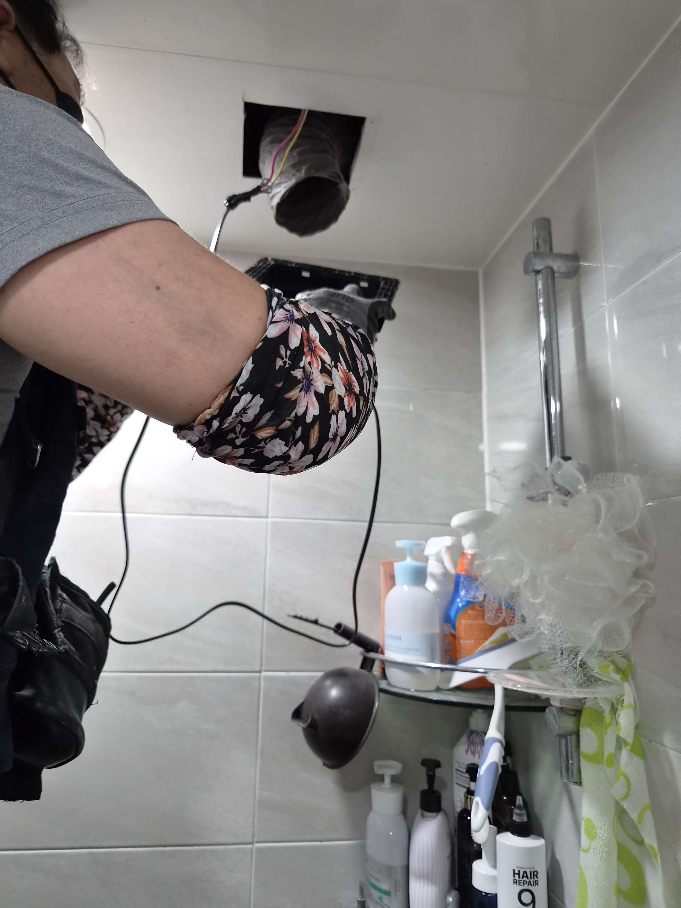
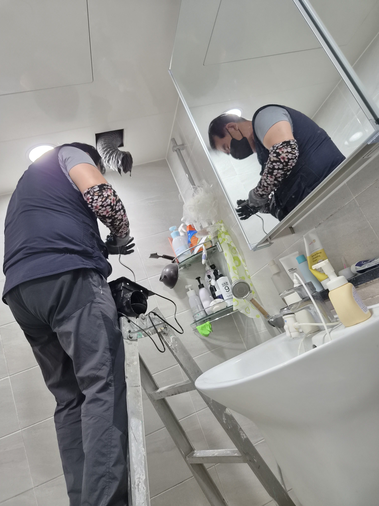
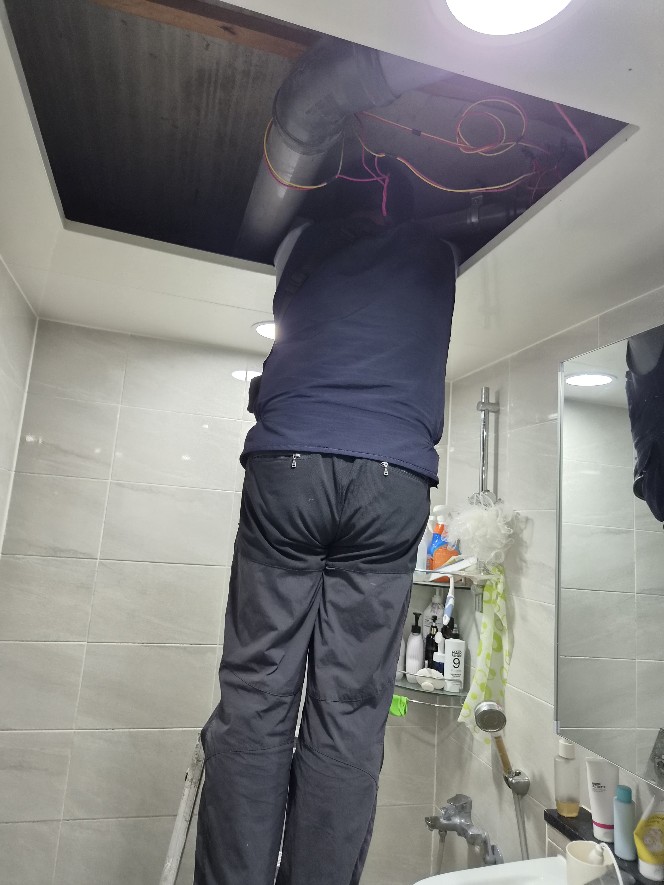
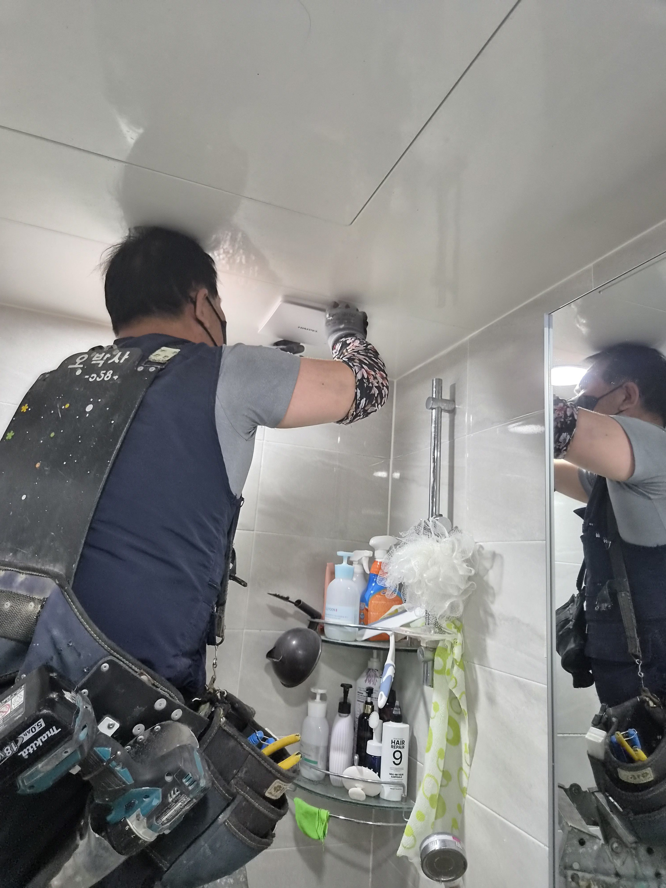
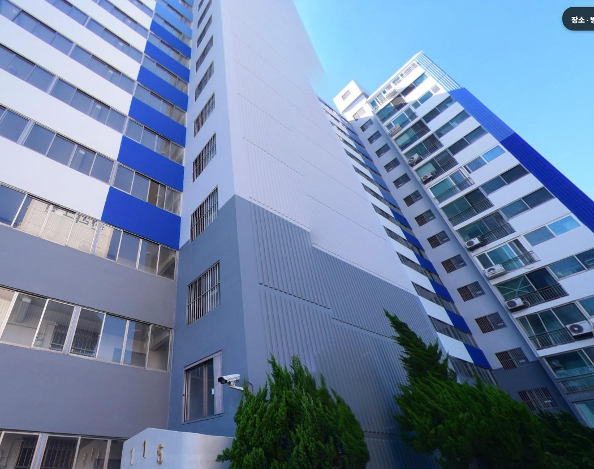

냄새가 잘 빠지지 않는다는 문의였습니다
화장실은 매일 쓰는 공간이라 환기가 약하면 냄새와 답답함이 바로 체감됩니다.
이번 현장은 울산 북구 중산동 경동그린맨션이었습니다. 고객님께서는 화장실 냄새가 잘 빠지지 않고, 기존 환풍기 소리도 기대만큼 시원하지 않다고 말씀하셨습니다.
현장을 확인해보니 오래된 환풍기는 돌고 있긴 했지만 배기 효율이 떨어져 있었습니다. 그래서 단순 청소보다 환풍기 교체가 더 적합한 상태로 판단했습니다.
환풍기는 작아 보여도 기능 차이가 큽니다
환풍기는 욕실 냄새와 습기를 밖으로 빼주는 역할을 합니다.
기존 제품은 오래 사용하면서 풍량이 떨어졌고, 소리 대비 실질적인 배기 성능이 아쉬운 상태였습니다.
힘펠 고속저소음 제품으로 교체했습니다
오박사만능인테리어는 환기량, 소음, 사용 편의성을 함께 보고 제품을 선택합니다.
이번 현장에서는 힘펠 환풍기로 교체해 냄새 차단과 욕실 공기 흐름이 더 안정적으로 느껴지도록 정리했습니다.
작업 순서
- 기존 환풍기 상태와 배기 흐름 점검
- 저속 환풍기 철거
- 전선과 배기 덕트 위치 확인
- 힘펠 고속저소음 환풍기 설치
- 배기 작동과 소음 상태 테스트
현장 사진으로 보는 전후 흐름
시공 전에는 천장 내부를 열어 기존 배기 상태와 전선, 덕트 방향을 먼저 확인했습니다.






단지와 현장 분위기를 함께 보여주는 이미지
이번 사례는 경동그린맨션 현장 맥락을 함께 보여드리기 위해 단지 외관 사진도 정리했습니다.

교체 후 달라진 점
교체 후에는 화장실 안의 공기 흐름이 더 명확해졌고, 냄새가 오래 머무는 느낌이 줄었습니다.
고객님께서는 이전보다 답답함이 덜하고 소리도 부담스럽지 않다고 말씀하셨습니다.
환풍기는 평소에는 눈에 잘 띄지 않지만, 막상 성능이 떨어지면 생활 만족도를 크게 바꾸는 장치입니다.
화장실 냄새가 잘 빠지지 않거나 환풍기 소리가 이상하게 느껴진다면 사진 한 장만 보내주셔도 상태를 먼저 안내드릴 수 있습니다.
울산 욕실수리·환풍기 교체 상담
중산동, 호계동, 화봉동, 송정동, 신천동을 비롯한 울산 전 지역 욕실수리와 환풍기 교체를 꼼꼼하게 도와드립니다.